소방설비기사(전기분야) (2010-03-07 기출문제)
1과목: 소방원론
1. 건축물의 주요구조부가 아닌 것은?
- 차양
- 보
- 기둥
- 바닥
(정답률: 91%)

2. 다음의 물질 중 공기에서의 위험도(H) 값이 가장 큰 것은?
- 에테르
- 수소
- 에틸렌
- 프로판
(정답률: 60%)
3. 촛불의 연소형태에 해당하는 것은?
- 표면연소
- 분해연소
- 증발연소
- 자기연소
(정답률: 71%)
4. 제1종 분말소화약제의 주성분으로 옳은 것은?
- KHCO3
- NaHCO3
- NH4H2PO4
- AI2(SO4)3
(정답률: 77%)
5. Halon 1301 의 분자식에 해당하는 것은?
- CCI3H
- CH3CI
- CF3Br
- C2F2Br2
(정답률: 88%)
6. 공기 또는 물과 반응하여 발화할 위험이 높은 물질은?
- 벤젠
- 이황화탄소
- 트리에틸알루미늄
- 톨루엔
(정답률: 67%)
7. 플래쉬오버(flash over)에 대한 설명으로 옳은 것은?
- 건물 화재에서 가연물이 착화하여 연소하기 시작하는 단계이다.
- 축적된 가연성 가스가 일시에 인화하여 화염이 확대되는 단계이다.
- 건물 화재에서 화재가 쇠퇴기에 이른 단계이다.
- 건물 화재에서 가연물의 연소가 끝난 단계이다.
(정답률: 88%)
8. 건물내 피난동선의 조건으로 옳지 않은 것은?
- 2개 이상으 방향으로 피난할 수 있어야 한다.
- 가급적 단순한 형태로 한다.
- 통로의 말단은 안전한 장소이어야 한다.
- 수직동선은 금하고 수평동선만 고려한다.
(정답률: 89%)
9. 열전도율을 표시하는 단위에 해당하는 것은?
- [kcal/m2ㆍhㆍ℃]
- [kcalㆍm2/hㆍ℃]
- [W/mㆍK]
- [J/m3ㆍK]
(정답률: 55%)
10. 분말 소화약제의 소화효과로 가장 거리가 먼 것은?
- 방사열의 차단효과
- 부촉매효과
- 제거효과
- 질식효과
(정답률: 58%)
11. 다음 물질 중 인화점이 가장 낮은 것은?
- 에틸알콜
- 등유
- 경유
- 디에틸에테르
(정답률: 68%)
12. 다음 중 착화온도가 가장 낮은 것은?
- 에틸알코올
- 톨루엔
- 등유
- 가솔린
(정답률: 64%)
13. 목재의 상태를 기준으로 했을 때 다음 중 연소속도가 가장 느린 것은?
- 거칠고 얇은 것
- 각이 잇고 얇은 것
- 매끄럽고 둥근 것
- 수분이 적고 거친 것
(정답률: 84%)
14. 정전기로 인한 피해발생의 방지대책이 아닌 것은?
- 접지실시
- 공기의 이온화
- 부도체 사용
- 70% 이상의 상대습도 유지
(정답률: 73%)
15. 다음 중 제3류 위험물로서 자연발화성만 있고 금수성이 없기 때문에 물속에 보관하는 물질은?
- 염소산암모늄
- 황린
- 칼륨
- 질산
(정답률: 86%)
16. 다음 중 연소 현상과 관계가 없는 것은?
- 부탄가스 라이터에 불을 붙였다.
- 황린을 공기 중에 방치했더니 불이 붙었다.
- 알코올 램프에 불을 붙였다.
- 공기 중에 노출된 쇠못이 붉게 녹이 슬었다.
(정답률: 87%)
17. 다음 원소 중 할로겐족 원소인 것은?
- Ne
- Ar
- Cl
- Xe
(정답률: 72%)
18. 자연발화의 예방을 위한 대책으로 옳지 않은 것은?
- 열의 축적을 방지한다.
- 주위 온도를 낮게 유지한다.
- 열전도성을 나쁘게 한다.
- 산소와의 접촉을 차단한다.
(정답률: 79%)
19. 목재 화재시 다량의 물을 뿌려 소화하고자 한다. 이 때 가장 큰 소화효과는?
- 제거소화효과
- 냉각소화효과
- 부촉매소화효과
- 희석소화효과
(정답률: 88%)
20. 건축물 내부에 설치하는 피난계단의 구조로서 옳지 않는 것은?
- 계단실은 창문ㆍ출입구 기타 개구부를 제외한 당해 건축물의 다른 부분과 내화구조의 벽으로 구획할 것
- 계단실의 실내에 접하는 부분의 마감은 불연재료로 할 것
- 계단실에는 예비전원에 의한 조명설비를 할 것
- 계단은 피난층 또는 지상까지 직접 연결되지 않도록 할 것
(정답률: 87%)
2과목: 소방전기회로
21. 어떤 부하의 유효전력을 측정하였더니 1200W 이고, 무효전력은 400Var 이었다. 이 부하의 역률은?
- 0.98
- 0.95
- 0.88
- 0.85
(정답률: 55%)
22. 그림과 같은 게이트의 명칭은?
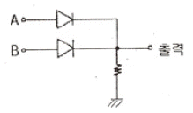
- AND
- OR
- NOR
- NAND
(정답률: 77%)
23. 다음은 타이머 코일을 사용한 접점과 그의 타임차트(timechart)를 나타낸다. 이 접점은? (단, t 는 타이머의 설정값 이다.)
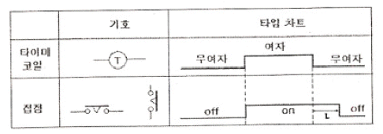
- 한시동작 순시복귀 a접점
- 순시동작 한시복귀 a접점
- 한시동작 순시복귀 b접점
- 순시동작 한시복귀 b접점
(정답률: 67%)
24. 콘덴서와 코일에서 실제적으로 급격히 변화할 수 없는 것은?
- 코일에서 전압, 콘덴서에서 전류
- 코일에서 전류, 콘덴서에서 전압,
- 코일, 콘덴서 모두 전압
- 코일, 콘덴서 모두 전류
(정답률: 75%)
25. 축전지의 내부저항을 측정하는데 가장 적합한 것은?
- 휘스토운 브리지
- 미끄럼줄 브리지
- 코올라우시 브리지
- 켈빈 더블 브리지
(정답률: 72%)
26. 트랜지스터의 베이스와 컬렉터 사이의 전류 증폭률 β=60이다. 이미터와 컬렉터 사이의 전류 증폭률 α는?
- 0.36
- 0.95
- 0.98
- 1.0
(정답률: 54%)
27. 30Ω의 저항과 R[Ω]의 저항이 병렬로 접속되어 있고 30Ω에 흐르는 전류가 6A이고, R[Ω] 흐르는 전류가 2A 이라면 저항 R[Ω]은?
- 5Ω
- 215Ω
- 90Ω
- 180Ω
(정답률: 66%)
28. 그림과 같은 블록선도에서 C는?
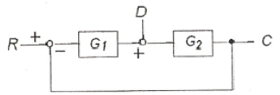
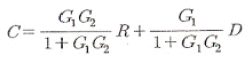
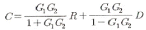
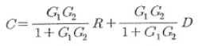
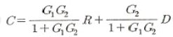
(정답률: 67%)
29. 피드백제어에 대한 설명으로 가장 적절한 것은?
- 이 제어회로는 개회로로 구성되어 있다.
- 입력과 출력을 비교하는 장치가 없는 것이 단점이다.
- 대역폭이 감소한다.
- 오차를 자동적으로 정정하게 하는 제어방식이다.
(정답률: 60%)
30. 온도, 압력, 농도, 유량, 약면 등과 같은 생산 공정 중의 상태량의 제어는?
- 프로세스 제어
- 정치제어
- 시퀀스제어
- 연속제어
(정답률: 81%)
31. AC 서보전동기의 전달함수는 어떻게 취급하면 되는가?
- 미분요소와 1차요소의 직렬결합으로 취급한다.
- 적분요소와 1차요소의 직렬결합으로 취급한다.
- 미분요소와 2차요소의 병렬결합으로 취급한다.
- 적분요소와 1차요소의 병렬결합으로 취급한다.
(정답률: 47%)
32. 커패시터가 직병렬로 접속된 회로에 180V의 직류전압이 인가되었을 때, 커패시터에 분당되는 전압V1, V2, V3 는?
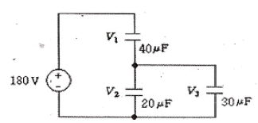
- V1=40[V], V2=80[V], V3=60[V]
- V1=80[V], V2=40[V], V3=60[V]
- V1=80[V], V2=100[V], V3=100[V]
- V1=100[V], V2=80[V], V3=80[V]
(정답률: 46%)
33. 권선수 10회의 코일에 자속이 10초 사이에 10Wb에서 20Wb로 변화하였다면 이때 토일에 유기되는 기전력은 몇 [V] 인가?
- 0.1V
- 1.0V
- 10V
- 100V
(정답률: 59%)
34. 바리스터(Varistor)의 용도는?
- 전압충족
- 정전압
- 과도전압에 대한 회로보호
- 전류특성을 갖는 4단자 반도체 장치에 사용
(정답률: 79%)
35. 유도전동기의 회전력은?
- 단자전압에 비례한다.
- 단자전압에 반비례한다.
- 단자전압의 제곱에 비례한다.
- 단자전압의 제곱에 반비례한다.
(정답률: 58%)
36. υ=Vmsin⍵t[V]로 표현되는 교류전압을 가하면 전력 P[W]를 소비하는 저항이 있다. 이 저항의 값[Ω]은?
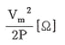
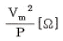
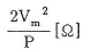
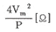
(정답률: 52%)
37. 대칭 3상 Y부하에서 각 상의 임피던스는 20Ω이고, 부하전류가 8A일 때 부하의 선간전압은 약 몇 [V]인가?
- 160[V]
- 226[V]
- 277[V]
- 480[V]
(정답률: 69%)
38. 자동화재탐지설비의 감지기 회로의 길이가 500m이고, 종단에 8kΩ의 저항이 연결되어 있는 회로에 24V의 전압이 가해졌을 경우 도통시험시 전류는 약 몇 [mA]인가? (단. 동선의 저항률은 1.69×10-8Ωㆍm이며, 동선의 굵기는 1.5mm2(1/1.38)이고, 접촉저항 등은 없다고 본다.)
- 204[mA]
- 3.0[mA]
- 4.8[mA]
- 6.0[mA]
(정답률: 54%)
39. 극성을 가지고 있어 교류 회로에 사용할 수 없는 것은?
- 마이카 콘덴서
- 전해 콘덴서
- 세라믹 콘덴서
- 마일러 콘덴서
(정답률: 59%)
40. 그림의 회로에 흐르는 전류 I 는 몇 [A]인가?
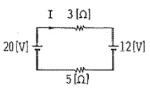
- 1[A]
- 2[A]
- 4[A]
- 8[A]
(정답률: 52%)
3과목: 소방관계법규
41. 제4류 인화성 액체 위험물 중 품명 및 지정수량이 맞게 짝지어진 것은?
- 제1석유류(수용성액체) - 100리터
- 제2석유류(수용성액체) - 500리터
- 제3석유류(수용성액체) - 1000리터
- 제4석유류 - 6000리터
(정답률: 62%)
42. 단독경보형감지기를 설치하여야 하는 특정소방대상물에 속하지 않는 것은?
- 연면적 600제곱미터 미만의 숙박시설
- 연면적 1천제곱미터 미만의 아파트
- 연면적 1천제곱미터 미만의 기숙사
- 교육연구시설 내에 있는 연면적 3천제곱미터 미만의 합숙소
(정답률: 60%)
43. 자동화재탐지설비의 설치면제 요건에 관한 사항이다. ( )에 들어갈 내용으로 알맞은 것은?(관련 규정 개정전 문제로 여기서는 기존 정답인 4번을 누르면 정답 처리됩니다. 자세한 내용은 해설을 참고하세요.)
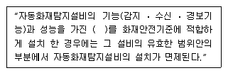
- 비상경보설비
- 연소방지설비
- 물분무등소화설비
- 준비작동식 스프링클러설비
(정답률: 35%)
44. 소방기본법상 소방대의 구성원에 속하지 않는 자는?
- 소방공무원법에 따른 소방공무원
- 의무소방대설치법 제3조 규정에 따라 임용된 의무 소방원
- 소방기본법 제37조의 규정에 따른 의용소방대원
- 위험물안전관리법 제19조의 규정에 따른 자체 소방대원
(정답률: 74%)
45. 방화관리자를 선임하지 아니한 방화관리대상물의 관계인에 대한 벌칙은?(관련 규정 개정전 문제로 여기서는 기존 정답인 2번을 누르면 정답 처리 됩니다. 자세한 내용은 해설을 참고하세요.)
- 100만원 이하의 벌금
- 300만원 이하의 벌금
- 1000만원 이하의 벌금
- 3000만원 이하의 벌금
(정답률: 73%)
46. 위험물안전관리법상 제6류 위험물은?
- 유황
- 칼륨
- 황린
- 질산
(정답률: 76%)
47. 소방기본법 상 소방대상물의 소유자ㆍ관리자 또는 점유자로 정의되는 자는?
- 관리인
- 관계인
- 사용자
- 등기자
(정답률: 73%)
48. 소방시설 중 연결살수설비는 어떤 설비에 속하는가?
- 소화설비
- 구조설비
- 피난설비
- 소화활동설비
(정답률: 76%)
49. 하자보수를 하여야 하는 소방시설과 하자보수 보증기간이 옳지 않은 것은?
- 피난기구 - 2년
- 유도표지 - 2년
- 자동화재탐지설비 - 3년
- 무선통신보조설비 - 3년
(정답률: 76%)
50. 특정소방대상물에 사용하는 물품으로 방염대상물품에 해당되지 않는 것은?
- 가구류
- 창문에 설치하는 커텐류
- 무대용 합판
- 종이벽지를 제외한 두께가 2밀리미터 미만인 벽지류
(정답률: 51%)
51. 소방시설의 종류 중 피난설비에 속하지 않는 것은?
- 제연설비
- 공기안전매트
- 유도등
- 공기호흡기
(정답률: 66%)
52. 방염업 등록 후 정당한 사유 없이 1년이 지날 때 까지 영업을 개시하지 아니하거나 계속하여 1년 이상 휴업을 한 때의 2차 행정처분의 기준은?
- 경고(시정명령)
- 영업정지 3월
- 영업정지 6월
- 등록 취소
(정답률: 66%)
53. 수동식소화기 또는 간이소화용구를 설치하여야 할 특정소방대상물은 연면적이 몇 제곱미터 이상인 것인가?
- 10제곱미터
- 33제곱미터
- 300제곱미터
- 600제곱미터
(정답률: 62%)
54. 소방시설공사업의 등록기준이 되는 항목에 해당되지 않는 것은?
- 공사도급실적
- 자본금
- 기술인력
- 장비
(정답률: 50%)
55. 중앙소방기술심의위원회 심의 사항이 아닌 것은?
- 화재안전기준에 관한 사항
- 소방시설의 구조와 원리 등에 있어서 공법이 특수한 설계 및 시공에 관한 사항
- 소방시설의 설계 및 공사감리의 방법이 관한 사항
- 소방시설에 대한 하자여부의 판단에 관한 사항
(정답률: 65%)
56. 소방대상물에 대한 개수명령과 관련하여 개수ㆍ이전ㆍ제거 사용의 금지 도는 제한, 공사의 정지 또는 중지 그 밖의 필요한 조치를 명할 수 있는 특정소방 대상물에 속하지 않는 것은?
- 의료시설
- 복합건축물
- 판매시설 및 영업시설
- 통신촬영시설 중 방송국 및 전신전화국
(정답률: 28%)
57. 위험물시설의 설치 및 변경, 안전관리에 대한 설명으로 옳지 않은 것은?
- 제조소등의 설치다의 지위를 승계한 자는 승계한 날 부터 30일 이내에 시ㆍ도지사에게 신고하여야 한다.
- 제조소등의 용도를 폐지한 때에는 폐지한 날부터 30일 이내에 시ㆍ도지사에게 신고하여야 한다.
- 위험물안전관리자가 퇴직한 때에는 퇴직한 날부터 30일 이내에 다시 위험물안전관리자를 선임하여야 한다.
- 위험물안전관리자를 선임한 때에는 선임한 날부터 14일 이내에 소방본부장 또는 소방서장에게 신고하여야 한다.
(정답률: 55%)
58. 액체위험물을 저장 또는 취급하는 옥외탱크저장소 중 몇 리터 이상의 옥외탱크저장소는 정기검사의 대상이 되는가? (관련 규정 개정전 문제로 여기서는 기존 정답인 3번을 누르면 정답 처리됩니다. 자세한 내용은 해설을 참고하세요.)
- 1만리터 이상
- 10만리터 이상
- 100만리터 이상
- 1000만리터 이상
(정답률: 61%)
59. 관계인이 예방규정을 정하여야 하는 옥외저장소는 지정수량의 몇 배 이상의 위험물을 저장하는 것은 말하는가?
- 10배
- 100배
- 150배
- 200배
(정답률: 66%)
60. 소방본부장 또는 소방서장이 화재조사 결과 방화 또는 실화의 혐의가 잇다고 이정하는 때 지체 없이 그 사실을 알려야할 대상은?
- 시ㆍ도지사
- 검찰청장
- 소방방재청장
- 관할 경찰서장
(정답률: 67%)
4과목: 소방전기시설의 구조 및 원리
61. 비상콘센트설비의 전원회로에서 하나의 전용회로에 설치하는 비상콘센트는 몇 개 이하로 하여야 하는가?
- 2개
- 3개
- 10개
- 20개
(정답률: 76%)
62. 비상방송설비의 배선에서 부속회로의 전로와 대지 사이 및 배선 상호간의 절연저항은 1경계구역마다 직류250V의 절연저항측정기를 사용하여 측정한 절연저항이 몇 [MΩ]이상이 되도록 하여야 하는가?
- 0.1[MΩ]
- 0.2[MΩ]
- 10[MΩ]
- 20[MΩ]
(정답률: 70%)
63. 유도등의 비상전원과 관련하여 지하층을 제외한 층수가 11층 이상의 층을 갖는 소방대상물의 경우 그 부분에서 피난층에 이르는 부분의 유도등을 몇 분 이상 유효하게 작동시킬수 있는 용량으로 하여야 하는가?
- 20분
- 40분
- 60분
- 120분
(정답률: 75%)
64. 햇빛이나 전등불에 따라 축광하거나 전류에 따라 빛을 발하는 유도체로서 어두운 상태에서 피난을 유도할 수 있도록 띠 형태로 설치되는 피난유도시설은?
- 피난로프
- 피앙유도선
- 피난띠
- 피난구조대
(정답률: 70%)
65. 화재 발생시 사람이 건축물 내에서 외부로 긴급히 뛰어내릴 때 충격을 흡수하여 안전하게 지상에 도달할 수 있도록 포지에 공기 등을 주입하는 구조로 되어 있는 것은?
- 구조대
- 피난매트리스
- 에어포지
- 공기안전매트
(정답률: 73%)
66. 감지기회로에 종단저항을 설치하는 이유는?
- 소모 전력을 측정하기 위하여
- 도통시험을 하기 위하여
- 절연저항을 측정하기 위하여
- 동시작동 시험을 하기 위하여
(정답률: 72%)
67. 누전경보기의 구성요소 중 경계전로의 누설전류를 자동적으로 검출하여 이를 누전경보기의 수신부에 송신하는 기기는?
- 송신기
- 속보기
- 이보기
- 변류기
(정답률: 76%)
68. 비상벨설비 또는 자동식사이렌설비에는 그 설비에 대한 감시상태를 60분간 지속한 후 유효하게 몇 분 이상 경보할 수 있는 축전지설비를 설치하여야 하는가?
- 10분
- 20분
- 60분
- 120분
(정답률: 76%)
69. 지하가 중 터널은 그 길이가 몇 [m]이상일 경우 비상조명등을 설치하여야 하는가?
- 500[m]
- 600[m]
- 700[m]
- 1000[m]
(정답률: 41%)
70. 비상방송설비의 음량조정기의 배선 방식은?
- 교차회로방식
- 송배전방식
- 3선식
- 2선식
(정답률: 75%)
71. 자동화재탐지설비의 감지기 중 연기를 감지하는 감지기는 감시챔버로 몇 [mm]크기의 물체가 침입할 수 없는 구조이어야 하는가?
- (1.3±0.⑤)[mm]
- (1.5±0.⑤)[mm]
- (1.8±0.⑤)[mm]
- (2.0±0.⑤)[mm]
(정답률: 63%)
72. 무선통신보조설비의 누설동축케ㅐ이블 또는 동축케이블의 임피던스는 몇 [Ω]으로 하여야 하는가?
- 5[Ω]
- 10[Ω]
- 50[Ω]
- 100[Ω]
(정답률: 76%)
73. 단독경보형감지기의 설치기준에 대한 설명으로 옳지 않은 것은?
- 건전지를 주전원으로 사용하는 경우 정상적으로 작동 할 수 잇도록 건전지를 교환할 것
- 각 실마다 설치하되, 바닥면적이 150m2마다 1개 이상 설치할 것
- 상용전원을 주전원으로 사용하는 경우 2차전지는 관련법 규정에 따른 성능시험에 합격한 것을 사용할 것
- 외기가 상통하는 계단실의 경우 최상층의 계단실의 천장에 설치할 것
(정답률: 69%)
74. 시각경보장치의 전원 입력 단자에 사용정격전압을 인가한 뒤, 신호장치에서 작동신호를 보내어 약 1분간 점멸회수를 측정하는 경우 매 초당 점멸주기는?
- 1회 이상 3회 이내
- 1회 이상 5회 이내
- 1회 이상 10회 이내
- 1회 이상 20회 이내
(정답률: 51%)
75. 자동화재속보설비의 속보기는 연동 또는 수동 작동에 의한 다이얼링 후 소방관서와 전화접속이 이루어지지 않는 경우에는 최초 다이얼링을 포함하여 몇 회 이상 반복접속을 위한 다이얼링리 이루어져야 하는가?
- 3회
- 5회
- 10회
- 20회
(정답률: 48%)
76. 감도조정장치를 갖는 누전경보기에 있어서 감도조정장치의 조정범위의 최대치는 몇 [A]이어야 하는가?
- 0.2[A]
- 0.5[A]
- 1.0[A]
- 2.0[A]
(정답률: 70%)
77. 객석의 통로의 직선부분의 길이가 25m인 영화관의 수평로에 객석유도등을 설치하고자 하는 경우 설치계수는?
- 5개
- 6개
- 7개
- 8개
(정답률: 70%)
78. 자동화재탐지설비의 중계기의 기능에서 수신개시로부터 발신개시까지의 시간은 몇 초 이내이어야 하는가?
- 1초
- 5초
- 20초
- 30초
(정답률: 50%)
79. 자동화재탐지설비의 발신기 설치기준으로 옳지 않은 것은?
- 소방대상물의 층마다 설치한다.
- 스위치는 바닥으로부터 0.8m이상 1.5m이하의 높이에 설치한다.
- 복도 또는 별도로 구획된 실로서 보행거리가 50m 이상일 경우에는 추가로 설치한다.
- 지하구의 경우에는 발신기를 설치하지 아니할 수 있다.
(정답률: 51%)
80. 소방시설용비상전원수전설비에서 전력수급용 계기용변성기ㆍ주차단장치 및 그 부속기기로 정의되는 것은?
- 수전설비
- 변전설비
- 큐비클설비
- 배전반설비
(정답률: 69%)